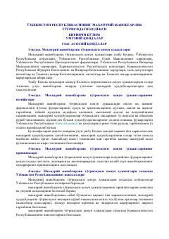

MJO'zbekiston Respublikasining ma'muriy javobgarlik to'g'risidagi asosiy qonuniy hujjati.
Ushbu hujjat O'zbekiston Respublikasining ma'muriy huquqbuzarliklar va ular uchun javobgarlikni belgilovchi asosiy qonuniy aktidir. Kodeks ma'muriy jazo turlari, ularni qo'llash tartibi hamda davlat organlarining bu boradagi vakolatlarini tartibga soladi.